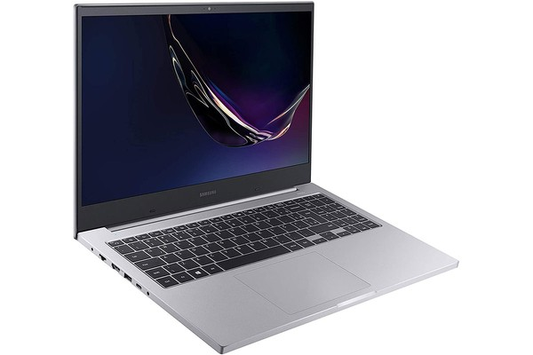

O assunto que eu mais gostei da apostila de Ciências da Computação, foi o assunto que introduziu a gente ao tema, pois ele faz incrivelmente bem o seu papel de introdução, que começa na definição de informática, passando também pela historia dos computadores que tanto amamos e usamos diariamente para trabalhar, jogar, ver vídeos etc, e indo até os dispositivos atuais(celulares , computadores pessoais entre outros). Como já foi dito, o livro faz uma repescagem de tudo o que já aconteceu de forma resumida em um só capitulo, o que deixa mais fácil de entender, pois ele só pega os pontos principais, e deixa o aprendizado até mais divertido.
Todos os assuntos tratados no PDF são de suma importante, mas da página 36 até a 41 me chamou bastante atenção, pois mostra um pouco sobre a CPU. Gostei bastante de conhecer e saber um pouco mais sobre esse componente tão importante do computador, responsável por executar todas as tarefas do computador. Chamou bastante atenção também saber que todo equipamento eletrônico possui uma CPU, mesmo sendo bastante pequena. A CPU se encaixa na placa mãe e pode ser dividida em três: Unidade Lógico/Aritmética (ULA); a Unidade de Controle e Registradores. Interessante também a sua arquitetura sendo CISC que objetiva fazer todo tipo de tarefa de qualquer programa e o RISC que é mais específico para uma tarefa, sua execução de programas, por meio de um ciclo de máquina, sendo super-rápido na busca, decodificação e execução de programas. Por último, mas não menos importante, tem o barramento conectando os demais componentes da arquitetura de bom Neumann, permitindo a troca de dados entre eles. É tão interessante e magnífico ver como existe uma pecinha responsável por algo tão grandioso, que cada coisinha tem sua função, não imaginamos como é interessante e o tanto de detalhes que possuí um computador. De forma que tudo se conecta mesmo tendo funções diferentes.
Para ir para uma vídeo aula sobre o assunto comentado, clique aqui
Para ir para a página onde falamos os assuntos que menos gostamos, cliqueaqui
